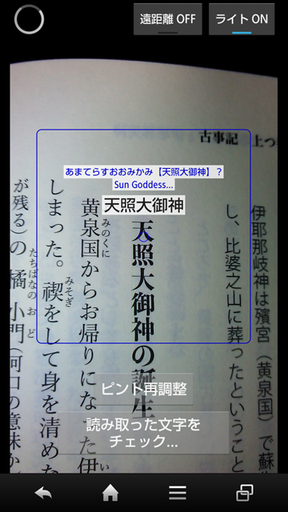
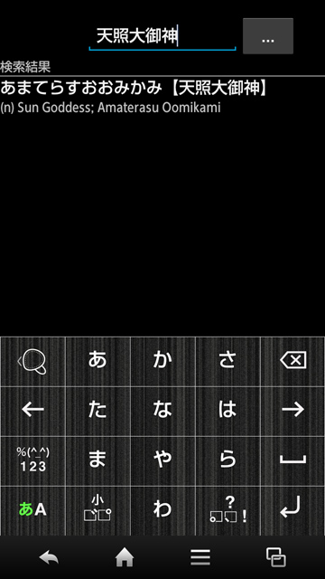
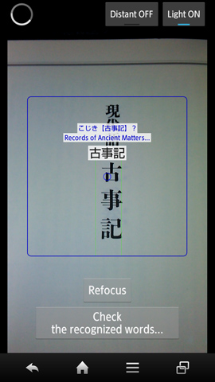
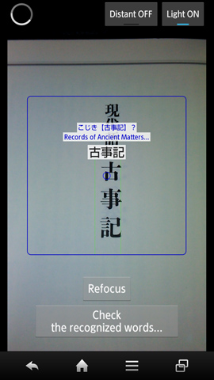
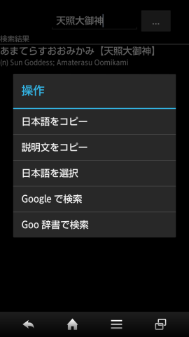
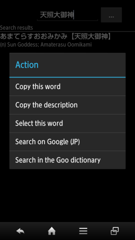

アプリの使い方 / How to use this app
概要 / Summary
読み取り画面で文字を読み取り、辞書画面で読みや意味を調べます。
読み取りの手順：
- 画面中心にある「○」が先頭文字の上に来るようにスマホの位置を調整。
- ピントを合わせる。（「ピント再調整」ボタンを使用できます）
Capture Japanese words in the capture screen, then check the words in the dictionary screen.
Steps to capture：
- Move your device so that the circle at the center of the screen comes over the first character to recognize.
- Adjust the focus. (You can use the "Refocus" button.)
画像：読み取り画面 / Fig. Capture screen

画像：辞書画面 / Fig. Dictionary screen

各画面説明 / Explanation by screen
ライセンス確認画面 / License verification screen
アプリを購入したGoogleアカウントでしかこのアプリは使用できません。
約６ヶ月に１回位、アプリ起動時にライセンスの確認画面が表示されます。
その間にアプリはGoogle Playにライセンスの状態を問い合せます。
ライセンスの確認が取れない場合はアプリは使用できません。
The app can only be used with Google accounts that purchased it.
About once every 6 months, the "license verification" screen will be displayed at launch time.
While this screen is displayed, the app will check your license status on Google Play.
The app can't be used if this verification fails.
データの展開画面 / Data installation screen
アプリをインストールしてはじめて起動したとき、データの展開画面が表示されます。
必要な日本語のデータがストレージに展開されます。
そのため、外部ストレージ（SDカード等）に100MB程度の空きが必要とされます。
外部ストレージが使用できない場合、又は空きが足りない場合は内部ストレージにデータが展開されます。
The first time you launch the app, the "data installation" screen will be displayed.
Data including Japanese words will be installed to a storage.
This will require about 100MB of space to the external storage (SD card for instance.)
If you don't have an external storage, or if you don't have enough space, the internal storage will be used instead.
読み取り画面 / Capture screen
画像：読み取り画面 / Fig. The capture screen
 

読み取り画面で文字を読み取ります。
読み取れた文字はリアルタイムで枠の中に表示されます。
文字が正しく表示されたら、「読み取った文字をチェック」ボタンを押して辞書に遷移します。
読み取り履歴が存在するため一度でも読み取れたら十分です。
認識のための条件：
- 中心にある「○」が先頭文字として認識されます。
- 認識したい語は枠の中に入らないとなりません。
- ピントが合っていないとなりません。適度なカメラ位置でボケている場合は「ピント再調整」を押してください。
正しく文字を読み込むためのコツ：
- 近すぎる、遠すぎる、斜めっている場合は認識できません。
- 認識が開始するとき（画面左上で回るプログレスバーが表示される時）に手ブレをしないようにする。
- なるべく明るい場所で、枠の中に影や指を撮さないようにする。必要であれば、「ライト」をONにする。
- 「ライト」は光沢のある素材に対しては避けたほうが良いです。（例：テカリのあるパンフレット等）
- どうしても認識でない場合は先頭文字の前の文字で試すと良いです。文字のサイズを認識しやすくなる可能性があります。（辞書画面で読み取り結果を編集可能です）
The capture screen is where you capture Japanese words.
The captured characters will be displayed inside the box, in realtime.
If the displayed characters are correct, press the "Check the recognized words" button to go to the dictionary screen.
As there is a history of what you captured, capturing correctly the characters once is enough.
Required conditions:
- The circle at the center of the screen is where the first character will be detected.
- The word you want to recognize must be entirely inside the box.
- You must adjust the focus. If the image is not clear, use the "Refocus" button.
Some tips to capture correctly:
- Don't set the camera too close or too far. Don't tilt the camera.
- Try not to move the camera when recognition starts (i.e. when the progress bar turning at the top left corner appears.)
- Use this app somewhere bright. Don't put your shadow or your finger inside the box. Set "Light" to ON if necessary.
- Avoid using "Light" on glossy paper. (Like brochures made of glossy paper.)
- When there is a character you cannot recognize, try to recognize the previous character. This can help the OCR detect the character size. (You can edit the result in the dictionary screen.)
辞書画面 / Dictionary screen
読み取った文字を辞書で調べます。
履歴ボタン（「...」ボタン）を押すと、今まで読み取った文字の一覧が表示されます。
調べる文字は編集することができます。文字が変更されるたびに再検索が走ります。
検索結果の項目を長押しすると、メニューが開きます。
端末のメニューボタンを押すと、検索文字に対してのメニューが開きます。
In the dictionary screen you can check the meaning of the characters you captured before.
By pressing the History button ("..." button), a list of the characters you captured previously will be displayed.
You can edit the word you want to check. The search result will be updated each time you modify the word.
By long touching a word of the search result, a menu for that word will be displayed.
By pressing the menu button of your phone, a menu for the word you're checking will be displayed.
画像：辞書項目の長押し / Fig. Long touch of a dictionary word
 
その他機能 / Other features
言語 / Languages
このアプリは、次の言語に対応しています：日本語、英語、フランス語。
端末のロケールに従って言語が自動的に設定されます。
対応していないロケールでは英語が設定されます。
The following languages are supported: Japanese, English, French.
One of the above language will be selected automatically according to the device locale.
English will be set for unsupported locales.
このアプリについて / About this app
ライセンス / License
このアプリは Google Play でのみ公開している、佐原瑠能の成果物です。
ユーザーはこのアプリを購入するにあたって、Googleアカウントが必要になります。
一度購入したユーザーは、同じアカウントを使用する限り、このアプリをどのデバイスでも使用できます。
This app, only published on Google Play, is the work of Runo Sahara.
A Google account is required to purchase it.
Once purchased, the user can use this app on any devices as long as the same account is used.
You cannot redistribute the app or use the app with an account that did not purchase it.
承認 / Acknowledgement
このアプリは EDICT の辞書データを使用しています。
この辞書データはElectronic Dictionary Research and Development Groupの成果物であり、そのグループのライセンスに従って使用しています。
このアプリは The Apache Software Foundation の成果物を、Apache License 2.0 に従って使用しています。
This app uses data from the EDICT dictionary.
This dictionary is the property of the Electronic Dictionary Research and Development Group, and is used in conformance with the Group's license.
This app uses the work of The Apache Software Foundation, in conformance with the Apache License 2.0.